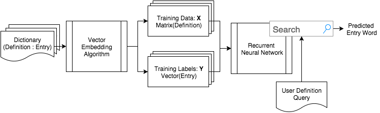

Portfolio


There has been one idea that I have not stopped thinking about for many years. My roommates and family will corroborate that I have been discussing it ad nauseum since freshman year. I never knew how to implement it. I did not know where to start. But today, I finally can say I am on the path to making my dream become a reality. I present: Wordly.
Wordly is based on this idea of a reverse dictionary. I'll admit it. I have a lot of trouble conjuring up the best word to use in a sentence. Too many times I'm stuck with that 'tip of the tongue' feeling. I know my long, superfluously worded phrases have more succinct alternatives (Wordly should recommend me the word verbose), but looking for the perfect word is time-intensive. A reverse dictionary would take a description I am thinking of and return words with related definitions. This would be an indispensable tool while writing essays, poetry, and even these posts.
When I thought of this idea, I immediately turned to Google. Search results pointed me first to Wikipedia, as always, which showed me the term conceptual dictionary. So, according to Wikipedia, Wordly is an attempt at constructing a conceptual dictionary rather than a reverse dictionary. I learned this idea is not that new, but I noticed that there were only a few examples of conceptual/reverse dictionaries. Most of them are in-print. One, however, was fairly promising.
OneLook.com has constructed a reverse-dictionary from indexing over 100 different dictionaries. They say it works by using various "statistical language processing hacks." Overall, OneLook's performance is really good, but I want to see if I could do it better.
I caught the bug and am obsessed with deep learning - captivated by the different research papers while constantly thinking of new applications. A friend recently showed me the power of recurrent neural networks (RNNs). RNNs are interesting because they are unlike the conventional neural networks I have worked with. First, they deal with sequences. This is crazy cool. These RNN can now incorporate a time-step into the equation. I can envision numerous RNN applications: everything from playing video-games (a sequence of moves) to learning how to draw (sequences of brush strokes). Second, RNN have an "internal memory." This is great for natural language processing (NLP) tasks. For humans to be able to read, we need to retain semantic information across sequences of words. To know that in the sentence, "In France, we spoke their native language," the word language refers to French, we need to remember we read the word France.
Thinking about RNNs, I recalled another interesting NLP tool: vectorized word embeddings. I first learned about word embeddings after Google released their word2vec framework. At a high-level, what this does is it reads huge amounts of text and computes mathematical representation of words. These 'words' now are clustered based on how close in meaning they are. What I find most fascinating is how these mathematical representations can be used in very simple operations. Addition and subtraction can find analogies between words. The most common example is
Where \(v(word)\) is the computed mathematical representation. This is one example of a possible computation on these word vectors.
For someone who thinks naturally in numbers and math, this was revolutionary. I used this framework to explore how my brain acts as a reverse dictionary. Each thought is a query; my brain performs some computation and if I'm correct, the output is the word I was looking for. We (my teammate Tim and I) used this process as the basis of how Wordly works.
First, we transformed a vocabulary to a corresponding vector space. Then, we trained a recurrent neural network on a set of dictionary definitions. We had the network predict a definition's corresponding entry. The objective was to minimize the Euclidean distance between the predicted vector and the true dictionary entry.

Figure 1. System design for Wordly. We took our set of dictionary definitions and entries and embedded them into vector space. This produced a training set and their corresponding training labels. We used a portion of this dataset to train the RNN. After training the RNN, we took the weights and built a searchable UI on top of it.
We coded the backend system with the Keras Python module. My thesis work is coded all in Theano, so this was like a walk in the park.
In the end, we were able to get a model that had an average Euclidean distance error of 2.063 on the test set. To visualize the performance I look at the words with the closest predictions:
| Word | Definition | Distance |
|---|---|---|
| oxytocin | hormone secreted by the posterior pituitary gland (trade name Pitocin) | 0.574378 |
| cardamom | rhizomatous herb of India having aromatic seeds used as seasoning | 0.623728 |
| heparin | a polysaccharide produced in basophils (especially in the lung and liver) and that inhibits the activity of thrombin | 0.627694 |
| Paleozoic | Of an era of geological time marked by the appearance of plants and animals, esp. Invertebrates. | 0.630854 |
| strychnine | formerly used as a stimulant | 0.634796 |
| Birmingham | A city in central England | 0.636163 |
| glassy | (of ceramics) having the surface made shiny and nonporous by fusing a vitreous solution to it | 0.646284 |
| innocently | in a naively innocent manner | 0.647628 |
| mistletoe | partially parasitic on beeches, chestnuts and oaks | 0.651191 |
| Daoism | philosophical system developed by Lao-tzu and Chuang-tzu advocating a simple honest life and noninterference with the course of natural events | 0.655668 |
This is a list of words with very specific definitions. However, many of these words have multiple definitions. For example cardamom has two definitions in our test set: "rhizomatous herb of India having aromatic seeds used as seasoning" and "aromatic seeds used as seasoning like cinnamon and cloves especially in pickles and barbecue sauces." Wordly is able to understand the first definition and predicts cardamom as the first predicted word. But Wordly's confidence dwindles for the second definition and chili replaces cardamon as the closest word.
Vector embeddings of two words are close if they are semantically similar. We hypothesize that the fact that Wordly learns very specific words is that their these word embeddings are distributed farther apart from more commonly used words. Therefore, it is easier for the RNN to learn weights that predict vectors substantially different from majority of the other words in the training set. If this hypothesis is true, we would expect that the model performs the worst on the most common words. Below is a sampling of the three words that Wordly performed the worst on:
| Word | Definition | Distance |
|---|---|---|
| an | a unit of surface area equal to 100 square meters | 7.569044 |
| talk | idle gossip or rumor | 7.138134 |
| The | A word placed before nouns to limit or individualize their meaning | 6.267479 |
It logical that Wordly would have trouble learning the definitions for words humans even have difficulty defining.
On cursory glance, I would say that Wordly has mediocre performance. Unfortunately, an average Euclidean distance error of ~2.06 is not fairly impressive. Most word embeddings have a nearest neighbor in the range of ~1.3 units. Thus, if we are predicting with an error radius of 2.06 it will be difficult to have the correct word be the first choice (or even in the top 10).
However, all in all I would say I am proud of this first iteration. First off, we faced a couple of limitations. We had about a week to design and implement this system and a half a week of training the system (we trained on the Yale High Performance Computing Cluster). Training could take anywhere from 5 to 30 minutes per epoch; therefore, we only were able to try out a few different models. Second, there is a lot of room for improvement.
For the sake of time and computational resources, we outsourced our word embeddings to Polyglot. A friend recommended Polyglot to us because it provided easy to use word embeddings in a simple pickle file. The set embedded 100,000 vocabulary words into 64 dimensions. Reflecting back, I would have liked to use a more substantial set. In future experiments, I plan to use Google's Word2Vec embeddings (3 million words into 300 dimensions) or a comparable dataset.
Another disadvantage of Polyglot's dataset was their vocabulary list. Many words were proper nouns, poorly processed (e.g. words contained punctuation), or absent. This made it difficult to cross reference with our dictionaries. Compared to OneLook.com hundreds of dictionaries, we were only using three. In total, we had about 300,000 training examples and 100,000 testing examples. I would like to run experiments to see how the amount of data affects the model's performance. And I would like to increase the size of our dataset because I believe more linguistic diversity will help the model better generalize for user input.
Lastly, there are so many more RNN models to try. We did not get to explore nearly as many types of models as we had hoped to. I am very new to the ideas of RNNs and NLP and so I do not have as strong of an intuition. I would love to get my hands dirtier with more research. I've always wanted to try genetic algorithms, so maybe this will be my chance.
In conclusion, while I wish the system performed better, this is an unfortunate reality of research. Iteration is necessary for success. For a quick, first experiment however, I am ecstatic over the promise of this project. It is truly an incredible feeling to be able to take an idea you have cared for over the years and finally see it through fruition. And at the end of the day, that feeling mixed with the sincere joy of execution is what's important.
Update: Googling around more, it looks like Yoshua Bengio released a project very similar (August 2015). This is sort of hilarious how similar some of the methods are (down to the same dictionaries as training data). Looks like my next project is going to be implementing his research.
The first assignment for my history course 'United States Lesbian & Gay History' with George Chauncey asked us to:
When I first read this assignment, my inner data-nerd jumped at the question. Spotify has seventy million users worldwide and almost every friend or acquaintance of mine has either directly used it or at least knows of the service. How could I use Spotify to help answer this question?
There was no way I would be able to easily ascertain the sexuality or gender identity of Spotify users. So some type of survey of individual basis was out of the question. However, one of the greatest features of Spotify are the public playlists. These playlists have different keywords and titles to help users find them. If there were a substantial number of playlists marked with LGBT or Q keywords, I could take the list of songs as a metric for association with the current LGBTQ consciousness (even if gay is used pejoratively - it is an association).
I have used the Spotify API before and each time it is a huge headache. Luckily, I found a Python project that provides an easy to use interface: Spotipy.
I searched Spotify playlists for four different keywords: gay, lesbian, bisexual, and transgender. Unfortunately, only the keyword gay provided enough results (161,403 songs in 604 playlists). Lesbian came second with 7,198 songs in 52 playlists. Thus, I narrowed down my research to only 'gay' playlists.
Here were the results for the top 5 most popular song on playlists with the keyword 'gay':
| Song | Artist | Count |
|---|---|---|
| Where Are Ü Now | Jack Ü & Justin Bieber | 127 |
| See You Again | Wiz Khalifa & Charlie Pluth | 109 |
| Trap Queen | Fetty Wap | 102 |
| Thinking Out Loud | Ed Sheeran | 94 |
| Stole the Show | Kygo | 87 |
When I first saw these results, I was a little confused because while all of these songs are incredibly trendy and popular, none of them stood out to me as stereotypical gay anthems.
But then I thought about it more and it made sense. Queer communities have become the centers for nightlife in many metropolitan areas because of their hip and culturally relevant reputations. For example on any weekend night in Capitol Hill, the historic gay district of Seattle, you will find an influx of young, college-aged (assumingly straight) bar-goers flooding the establishments either owned or frequented by the gay community. Thus, I believe the prevalence of such songs in my results could be interpreted in two ways: as the gay community’s ability to discover popular songs before they get big or the assimilation of music tastes in the queer community.
For the first case, gay-clubs could have found these songs first and were able to draw the heterosexual masses to patronage because of the captivating nature of the clubs’ music choice. However, with my limited data, the implications could very be the opposite. The gentrification of these gay spaces is a current trend in urban areas. Gay communities could be adopting the musical tastes of the hegemony as a result of assimilation.
Either way, I wanted to dive deeper to see if I could still find a list of distinctly gay songs. I played around with different algorithms that tried to utilize a Spotify song's popularity index, but I didn't like anything I came up with. Then I realized - if the top songs are all songs on the Top 100, why don't I simply filter out the Top 100?
This resulted in the Top 5 occuring songs:
| Song | Artist | Count |
|---|---|---|
| Stole the Show | Kygo | 87 |
| Firestone | Kygo | 84 |
| Chandelier | Sia | 79 |
| Wannabe | Spicegirls | 72 |
| Believe | Cher | 67 |
This is more of a list that I would expect to see. Cher and Spice Girls have long been gay icons. Chandelier was a common gay anthem in Tel Aviv circa Summer 2014. Kygo stumped me at first, but I can easily see Stole the Show's music video interpreted as a metaphor for gay experience (SPOILER: the military intervention once the aliens find each other can be a metaphor for America's policing on homosexuals, who are commonly seen as alien to society). Now I cannot stop listening to Stole the Show.
If I were to extend and improve this research, I would extract temporal data about the songs and playlists. I could cross-reference this with a Top 100 Billboards dataset. Then I would have more insight on who first found a song popular: the queer community or pop culture.
I have released my datasets and iPython notebook code on my GitHub account.
At Amazon this past summer. I received an email asking for nominations to the White House LGBTQ Tech & Innovation Summit. On a pure whim, I decided to nominate myself. All I remember them asking for was my name and how I identified myself. I was just an intern - I had no chance, but there was nothing to lose by applying. Well to my utmost suprise, I received an email a few weeks later that led to one of the most greatest opportunities of my life.

The White House LGBTQ Tech & Innovation Summit brought together the most diverse group of technologist and activist to try and solve national problems in criminal justice, eceonmic inclusion, education, and climate change (to name a few). I do not remember being in a room with that much energy and passion. It was inspiring; I would even say life-changing.
One of the takeaways from the summit was the opportunity to join a team and work on a project that put into action the ideas generated from that day. I luckily had the chance to join what was to become #transneeds.
I think our presentation Ina gave for the We The Geek's Demo Day is the best description of everything we were able to accomplish.
I learned so much from being a part of this project. But that is mostly due to having such an amazing team.
First, working remotely is a challenge. To produce results when team members are across the country takes a lot of organization and commitment. Missing a meeting is not the end of the world, but I found that catch up is much more difficult over the internet than in person.
A good survey needs to account for people who cannot take the survey. At first, I thought the social media campaign through Twitter and Facebook was perfect (I'm a Millenial what can I say). But as we discussed it more and more, I realized how social media accounts are becoming less anonymous unless they are throwaway accounts. This is a huge barrier for someone who cannot go public with their identity. Not to mention the 19% of respondants to the NCTE National Survey who have experienced homelessness at some point in their lives. So social media was insufficient. A texting-hotline provided depth to the survey I do not think social media could ever provide. The stories we received were both heart-breaking and inspiring. While more data could never hurt, I think we did a pretty solid job for a three month sprint.
Overall, it was an honor working with the #transneeds team. And I'm excited to see what will come of it.